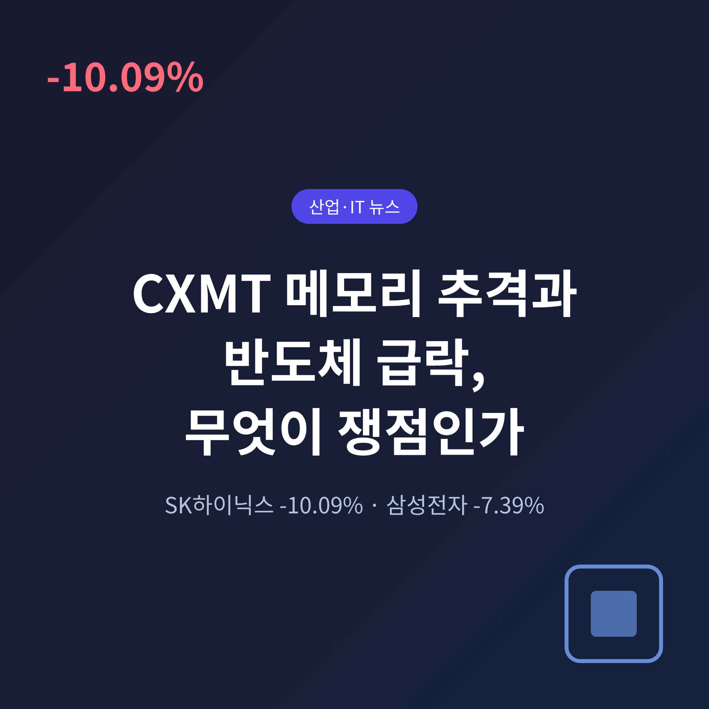
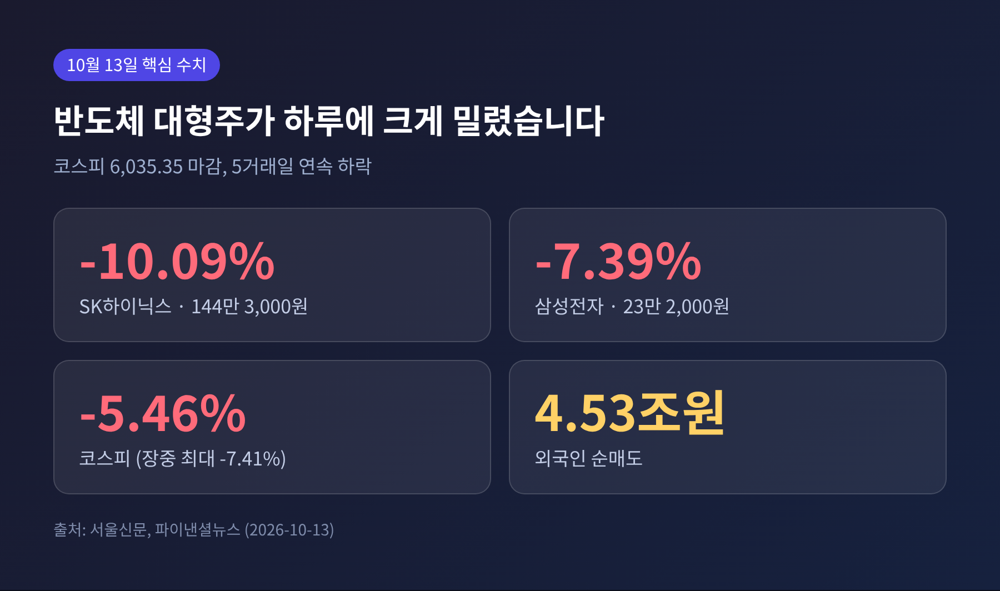
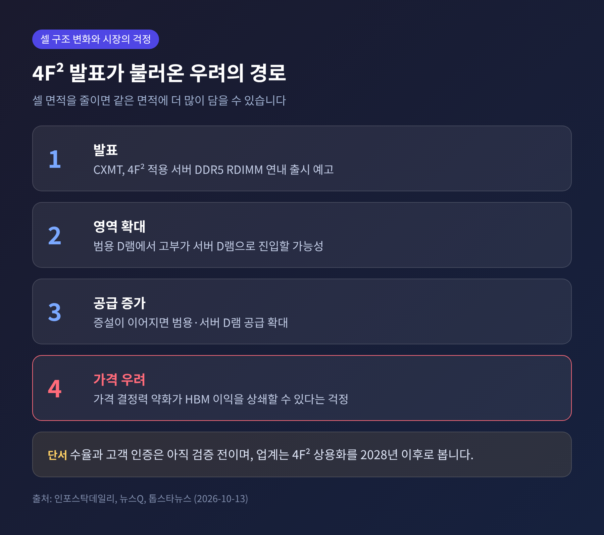
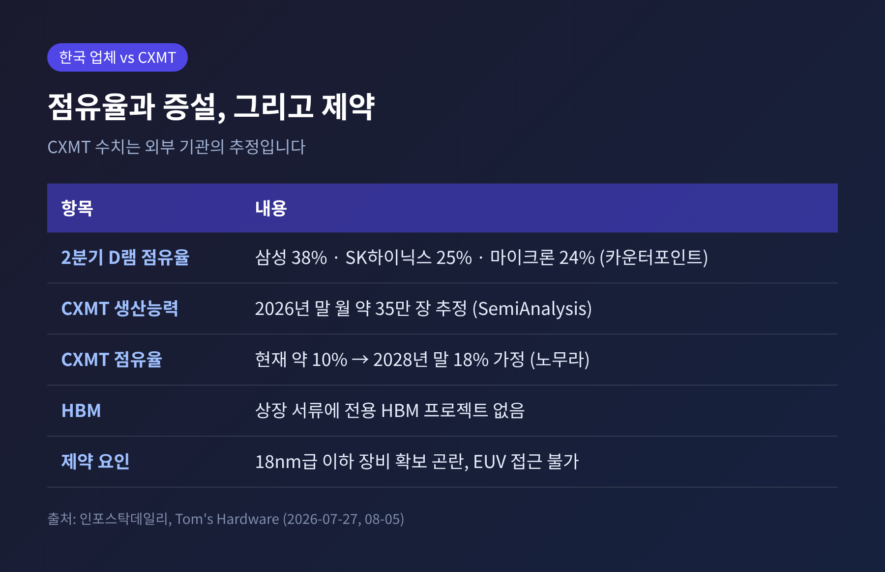
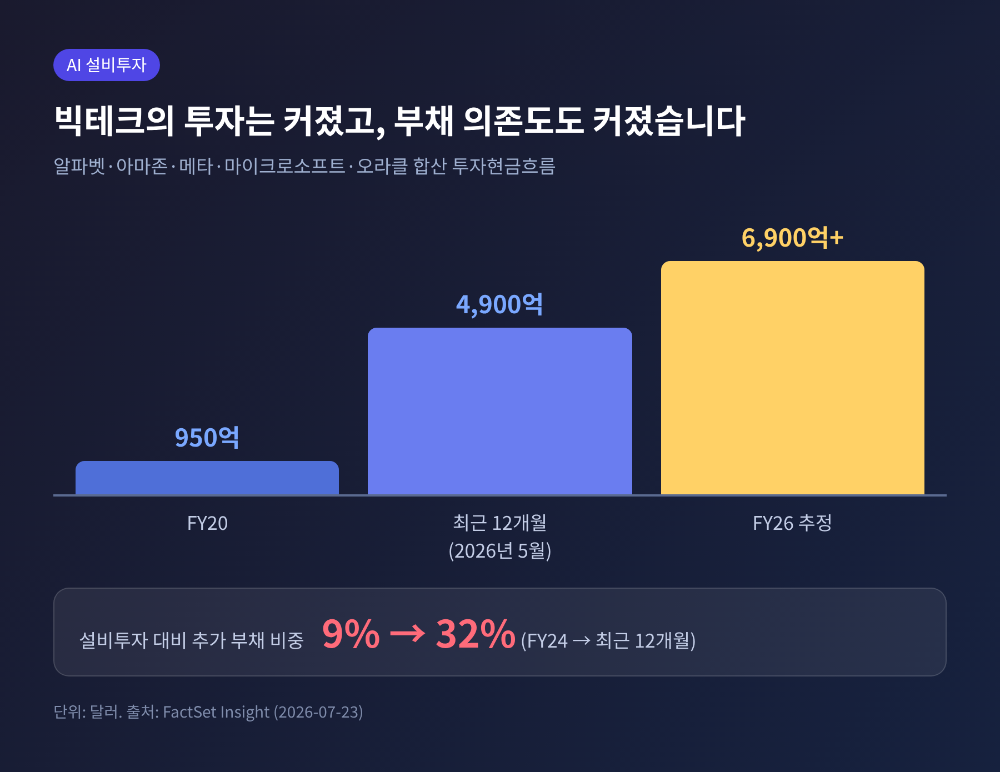
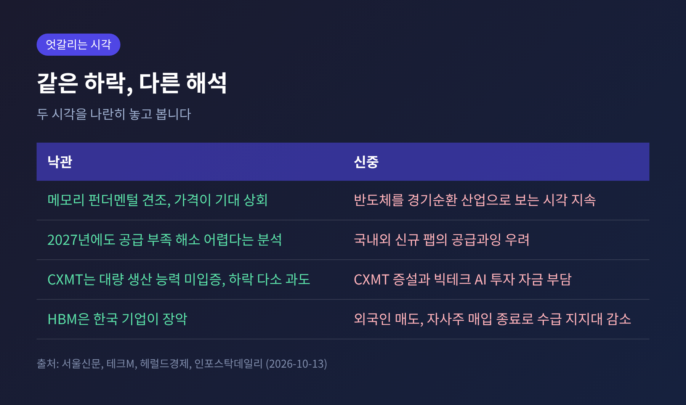

CXMT 메모리 추격에 삼성전자·SK하이닉스 급락, 반도체 업황 쟁점 짚어보기

3줄 요약
- 10월 13일 SK하이닉스가 10.09%, 삼성전자가 7.39% 떨어졌습니다. 직접 계기는 중국 CXMT의 서버용 D램 연내 출시 발표입니다.
- 시장이 본 핵심은 기술 추월이 아니라 가격 결정력입니다. 범용·서버 D램 공급이 늘면 HBM 이익을 깎을 수 있다는 걱정입니다.
- 실적은 사상 최대 수준이고 가격 전망도 오름세입니다. 주가와 펀더멘털의 간극이 이번 논쟁의 본질입니다.
오늘은 이날의 급락 뒤에 놓인 산업 사정을 정리해 보려 합니다. CXMT가 무엇을 발표했는지, 메모리 업황은 실제로 어떤지, 빅테크의 AI 투자는 왜 변수가 되는지 차례로 살펴보겠습니다. 주가 등락 자체보다 그 밑의 기술과 수급에 초점을 맞춥니다.
■ 무슨 일이 있었나
13일 코스피는 5.46% 하락한 6,035.35로 마감했습니다. 장중에는 5,900선까지 밀렸습니다. 시가총액의 약 절반을 차지하는 두 반도체 대형주가 낙폭을 키웠습니다.
삼성전자는 23만 2,000원으로 7.39% 내렸고, 5거래일 연속 약세였습니다. SK하이닉스는 144만 3,000원으로 10.09% 하락했으며 장중 한때 11%를 넘게 빠졌습니다. 외국인은 하루 동안 약 4조 5,300억 원을 순매도했습니다.
전날 미국 시장의 분위기도 좋지 않았습니다. 필라델피아 반도체지수가 2.67% 떨어졌고 마이크론은 3.9% 내렸습니다. 일본 키옥시아도 장중 10% 넘게 하락했습니다. 한국만의 사건은 아니었다는 뜻입니다.

■ 직접 계기, CXMT의 4F² 발표
CXMT는 중국 최대의 D램 업체입니다. 차오칸위 총재가 10일 전후 상하이 콘퍼런스에서 새 구조의 D램 기술을 소개했습니다. 4F² 셀 구조에 하이브리드 본딩을 결합한 서버용 DDR5 RDIMM을 연말까지 내놓겠다는 계획입니다.
4F²는 메모리 셀이 차지하는 면적을 기존 6F²보다 줄이는 설계입니다. 같은 면적에 더 많은 데이터를 담을 수 있어 집적도를 30~50% 높일 수 있다는 설명이 따랐습니다. CXMT는 9월 20일에도 5세대 D램 양산을 발표했습니다. 메모리 어레이의 하프피치는 11.95nm로 알려졌습니다.
시장이 놀란 지점은 영역입니다. 중국 업체가 소비자용 범용 D램에서 값이 높은 서버 D램으로 올라설 수 있다는 신호로 읽혔기 때문입니다.
다만 발표와 양산은 다릅니다. 서버 메모리는 수율과 고객사 인증을 통과해야 대량 공급이 가능합니다. CXMT 제품은 아직 그 검증을 받지 않았습니다. 연말 제품에 4F²가 일부만 적용될 수 있다는 관측도 있습니다. 공개된 자료만으로 CXMT가 삼성전자나 SK하이닉스를 기술에서 앞섰다고 보기는 어렵다는 것이 톱스타뉴스 등의 평가입니다.
한국 업체도 손 놓고 있지는 않습니다. 삼성전자는 올해 ISSCC에서 4F² 시제품을 공개했고, SK하이닉스는 2025년 6월 4F² 수직게이트 D램 로드맵을 내놓았습니다. 업계는 이 구조의 상용화를 2028년 이후로 봅니다.

■ 왜 HBM이 아니라 범용 D램이 문제인가
이번 기술은 HBM과 직접 관련이 없습니다. 레일리언트 글로벌 어드바이저스의 필립 울 수석 시장전략가는 HBM 시장을 여전히 한국 기업이 장악하고 있어 당분간 위협 가능성이 희박하다고 짚었습니다. CXMT의 상장 서류에도 전용 HBM 프로젝트는 없습니다.
그렇다면 왜 두 종목이 이렇게 흔들렸을까요. 이유는 이익 구조에 있습니다. 올해 메모리 호황은 HBM만이 아니라 범용 D램 가격 상승이 함께 끌어올렸습니다. 서버용 범용 D램까지 중국 물량이 늘면 이 가격이 꺾일 수 있습니다. HBM에서 벌고 범용에서 잃는 구도가 될 수 있다는 걱정입니다.
CXMT의 덩치도 가볍지 않습니다. 7월 27일 상하이 증시에 상장해 첫날 공모가 대비 약 466% 올랐고, 약 579억 위안(약 86억 달러)을 조달했습니다. 서버용 매출 비중은 2024년 8.4%에서 지난해 26.5%로 커졌습니다. SemiAnalysis는 CXMT의 월 웨이퍼 생산능력이 올해 말 약 35만 장에 이를 것으로 추정합니다. 올해 늘리는 물량만 월 약 8.5만 장으로, 같은 기간 SK하이닉스(6만 장)나 마이크론(3만 장)을 웃돈다는 계산입니다. 노무라는 CXMT의 세계 D램 생산 점유율이 현재 약 10%에서 2028년 말 18%까지 오른다고 가정했습니다. 모두 추정치라는 점은 감안해야 합니다.
반대편 사정도 있습니다. 수출통제로 18nm급 이하 첨단 장비를 구하기 어렵고, EUV 장비에는 접근하지 못합니다. 노무라는 장비·소재 금수를 하방 시나리오로 두고 2027~2028년 순이익을 30~33% 낮춰 잡았습니다. 미국에서는 중국산 메모리 조달을 제한하려는 움직임도 거론됩니다.

■ 업황은 어떤가, 실적과 가격
실적만 놓고 보면 분위기는 정반대입니다. 삼성전자는 8일 3분기 잠정 영업이익 107조 4,000억 원을 발표했습니다. 사상 처음 분기 100조 원을 넘었고, 전년 동기보다 782.5% 늘었습니다. 증권가는 메모리 부문에서 약 111조 9,000억 원을 번 것으로 추정합니다. 반면 스마트폰과 가전은 적자였을 것으로 봅니다. 메모리 가격 상승이 세트 사업의 원가를 키웠다는 해석입니다.
SK하이닉스의 3분기 영업이익 컨센서스는 약 77조 원입니다. 실적 발표는 이달 말로 예정돼 있습니다.
가격도 올라갈 전망입니다. 트렌드포스는 4분기 범용 D램 계약가격이 전분기보다 10~15% 오른다고 내다봤습니다. 고성능 서버용 선단 공정에 생산능력이 몰리면서 시장 전체가 공급 부족이라는 설명입니다. 다만 3분기 전망치(13~18%)보다 상승폭은 줄었습니다. 소비자 쪽에서는 부품값 부담으로 PC와 스마트폰 수요가 위축되고 있습니다.
그런데도 주가는 내렸습니다. KB증권 이은택 연구원의 진단은 이렇습니다. 메모리 이익 추정치는 계속 오르는데 주가는 꺾이고 있다는 것입니다. 투자자가 반도체를 여전히 경기순환 산업으로 보고 장기 이익 체력을 의심한다는 풀이입니다. iM증권 양현경 연구원은 삼성전자의 12개월 선행 PER이 3.91배까지 내려왔지만, 중요한 것은 2028년 이후에도 높은 이익을 유지하는가라고 말했습니다.
■ 또 하나의 변수, AI 투자의 수익성
두 번째 불안은 수요 쪽에 있습니다. 메모리 호황의 뿌리는 빅테크의 데이터센터 투자입니다. 팩트셋에 따르면 알파벳·아마존·메타·마이크로소프트·오라클의 투자현금흐름은 2020 회계연도 약 950억 달러에서 최근 12개월 약 4,900억 달러로 불어났습니다. 2026 회계연도 추정치는 6,900억 달러가 넘습니다.
문제는 돈의 출처입니다. 설비투자 대비 추가 부채 비중이 2024 회계연도 9%에서 최근 32%로 높아졌고, 알파벳과 마이크로소프트를 빼면 올해 잉여현금흐름이 0 근처이거나 마이너스일 것으로 예상됩니다. 7월에는 S&P가 오라클 신용등급을 BBB-로 한 단계 내렸습니다. 투자가 수익으로 돌아오기 전에 자금 부담이 먼저 커진다는 시각입니다.
예전에는 빅테크가 투자를 늘린다는 소식 자체가 반도체주의 호재였습니다. 지금은 그 투자를 어떻게 감당하느냐가 먼저 묻는 질문이 되었습니다. 코스피와 필라델피아 반도체지수의 상관계수가 연초 0.943에서 10월 0.68로 낮아진 것도, 메모리 비중이 높은 한국 시장이 이 우려에 더 민감하다는 해석과 맞닿아 있습니다.

■ 엇갈리는 시각과 앞으로 볼 대목
이번 하락을 두고 의견은 갈립니다.

낙관 쪽은 이렇게 말합니다. 하나증권 김록호 연구원은 메모리 펀더멘털이 견조하고 가격이 기대를 웃돈다고 봤습니다. 유진투자증권은 공정 전환으로 비트 증가폭이 둔화되고 신규 팹 가동 시점을 고려하면 2027년에도 공급 부족이 해소되기 어렵다고 분석했습니다. 서울신문이 전한 전문가들도 CXMT가 아직 대량 생산 능력을 입증하지 못했고 점유율도 뒤처져 있어 이번 하락이 다소 과도했다고 평가했습니다.
신중 쪽의 근거도 있습니다. SK하이닉스를 둘러싸고는 국내외 추가 팹이 훗날 공급과잉을 부를 수 있다는 우려가 나옵니다. 하나증권은 6월 말 이후 메모리 업체의 이익 추정치가 정체돼 있고 3분기 추정치는 환율 영향으로 낮아지고 있다고 짚었습니다. 유안타증권 김용구 연구원은 외국인이 낮은 멀티플에서도 팔고 있으며, 반등하려면 하이퍼스케일러 투자에 대한 신뢰와 장기공급계약의 가치 입증, 수율 개선, 주주환원 강화가 필요하다고 했습니다. 삼성전자는 자사주 매입을 6일 마무리했고 SK하이닉스도 종료가 가까워, 수급 지지대가 줄어든 점도 겹쳤습니다.
앞으로 확인할 지점은 네 가지입니다.
- 이달 말 삼성전자(29일 예정)와 SK하이닉스의 3분기 실적 발표와 콘퍼런스콜
- 연말로 예고된 CXMT 서버 D램이 실제 양산 수율과 고객 인증을 통과하는지
- 삼성전자의 HBM4·HBM4E 공급 확대와 SK하이닉스의 고객 관계 유지
- 빅테크 설비투자 계획이 유지되는지, 그리고 증권가의 내년 이익 추정치 조정
정리하면 이렇습니다. 지금 시장이 묻는 것은 한 해의 이익이 아니라 그 이익이 얼마나 오래가느냐입니다.
CXMT의 발표는 그 질문에 불을 붙인 계기였을 뿐, 답은 이달의 실적과 연말의 양산 성적표에서 가려질 것입니다. 업황이 좋다는 사실과 주가가 오른다는 사실은 다른 이야기라는 점을, 이번 하루가 다시 한 번 보여주었습니다.
※ 이 글은 공개된 보도와 자료를 바탕으로 산업 동향을 해설한 것이며, 특정 종목의 매수·매도를 권유하지 않습니다. 인용된 수치 중 생산능력과 점유율은 외부 기관의 추정치이며, 투자 판단과 그 결과의 책임은 투자자 본인에게 있습니다.
출처: 서울신문(10/13), 헤럴드경제(10/13), 파이낸셜뉴스(10/13), 인포스탁데일리(10/13), 톱스타뉴스(10/13), 뉴스Q(10/13), 테크M(10/13), 삼성전자 뉴스룸(10/8), 한국금융신문(10/8), TrendForce(9/30), Tom's Hardware(7/27, 8/5), FactSet Insight(7/23)